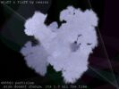
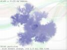
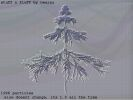
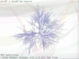
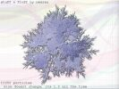
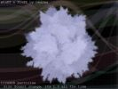

In March 2002 Kestutis Tauchkela aka ProNinja (a widely known person among the few Lithuanian game developers) announced a "Lithuania's C++ Guru" coding contest. The task was to write a snowflake image generator. Of course, there were many discussions: whether this task shows any C++ programming skills at all, what are the precise requirements (afterall, what is "a good snowflake"?), etc. However, the contest began.
Sadly, there were only two entries... The one presented here was grantly assigned a first place by jury (that is, Kestutis).
What I did was a kind-of-L-System based snowflake generator (and with some bonus rules and effects for fun). As the contest was called "C++ guru", I used bits of C++ features (templates, OOP) here and there (mostly where they were absolutely unneeded).
As the program had to work on simple Pentium MMX computer with no 3D accelerator and other fancy features, I've had a chance to remember old times - doing things by hand: line drawing, transparency, sorting, z-buffer (actually z-buffer is not needed, but used for "fun" post-processing filters like image-space edge detection). It was pretty cool :)
Binary and source release here (85 KB). Compiles under MSVC6 (should compile with others as well), runs from the command line with args (that was the requirement).
Thumbnails, click for a larger shot.
     {kind=link}
{kind=link}
{kind=link}
{kind=link}
{kind=link}
{kind=link}